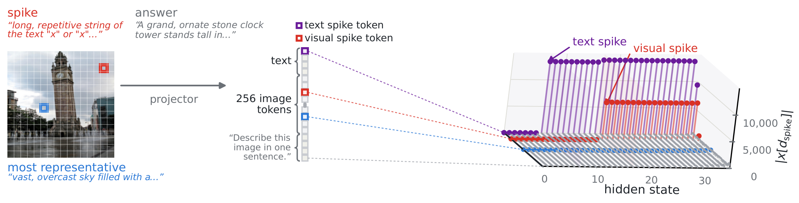
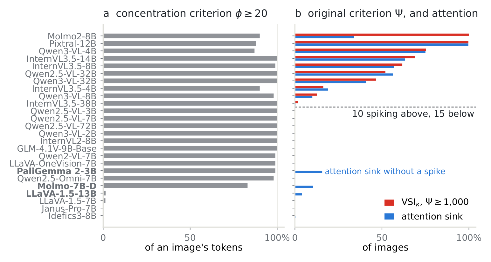
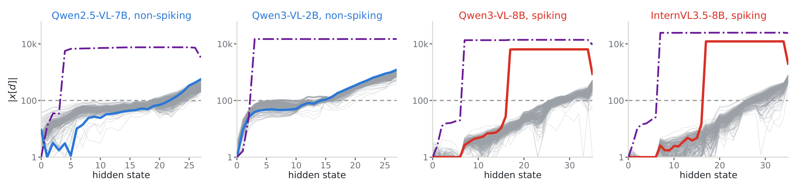
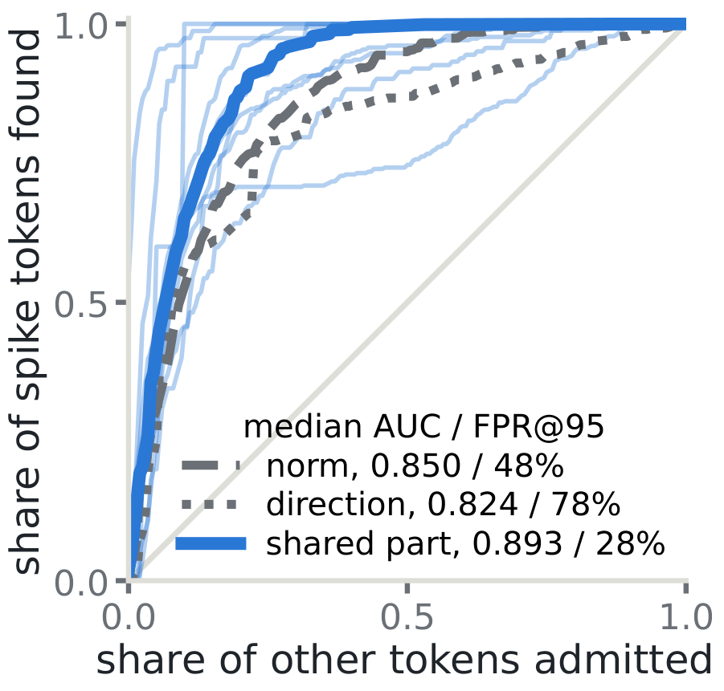
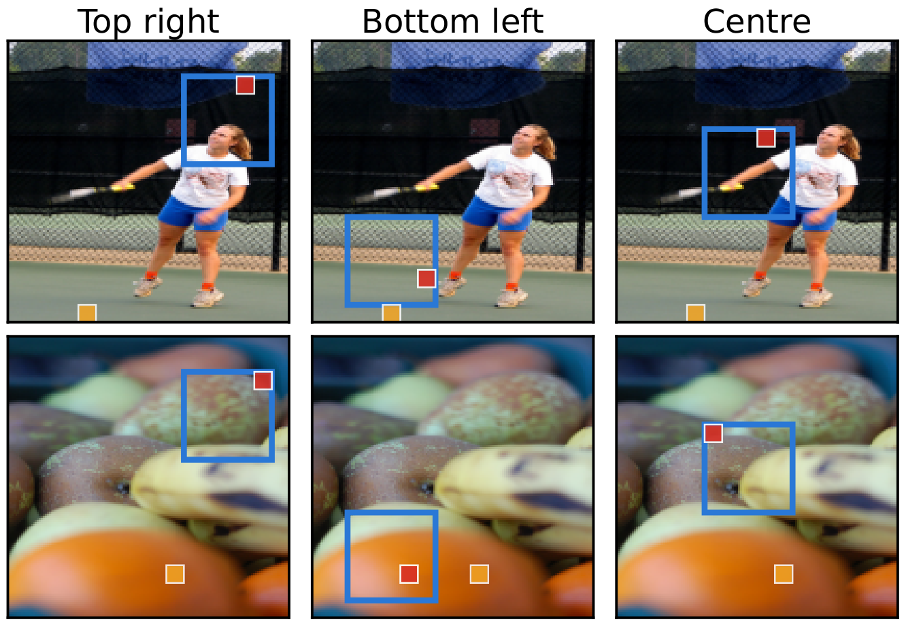
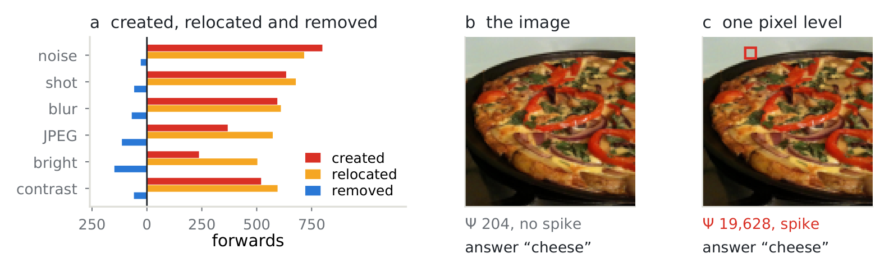

Prefer to watch? A video overview of the paper, generated with NotebookLM.
Abstract
Large vision–language models (LVLMs) inherit massive activations from their text-only bases: spikes where a few fixed hidden channels receive values thousands of times above the typical magnitude. The text spike systematically appears in early layers at a fixed initial position, independently of input content. Visual spikes vary across images, but whether their formation follows a consistent pattern across LVLMs and how they respond to image perturbations remain open questions. We find that some LVLMs do not form visual spikes, while others spike at different rates, typically in deeper layers. We identify the trigger direction from model weights and an interpretable location rule: before the language model decoder runs, eventual spike tokens are largely restricted to those sharing least with the rest of the image. Crucially, visual spikes are strikingly brittle. Common corruptions frequently create and relocate spikes, and less often remove them, raising overall incidence. Our trigger-guided spike attack deliberately creates or removes spikes under a small ℓ∞ budget, with 1/255 enough in nine of the ten models that spike. Finally, our preventive intervention removes only the trigger component before spikes erupt, eliminating or substantially reducing spikes on clean and perturbed images while leaving the other image tokens nearly unchanged. Our study spans 25 adapter-based LVLMs built on 18 released text-only bases from 10 families, ranging from 2B to 72B parameters.
Findings
Ten models form visual spikes and fifteen do not
Under the original massive-activation criterion, ten of the 25 LVLMs form visual spikes at different rates, and fifteen do not. The commonly used visual-spike definition obscures this division, because it flags most image tokens in nearly every model. Independently measured attention sinks largely track the original criterion.

A visual switch and its trigger direction
Image tokens reach a block that produces the spike, the visual switch, under some visual adaptations and not others. This block typically sits deeper than the text switch. Inputs sufficiently aligned with a trigger direction cause the block to produce a spike. We formulate this direction from the block's weights and estimate it while retaining the full nonlinearity, which recovers the quadratic eigendirection of Sun et al. as a special approximation. The text spike, by contrast, is gated by the norm alone. The visual spike also depends on the text spike's attention sink: blocking the eventual spike token's attention to the text spike token suppresses the visual spike on 75 to 100% of images.

Spike tokens are the least-shared image tokens
Before the decoder runs, eventual spike tokens are already largely restricted to those sharing least with the rest of the image. This rule predicts later alignment with the trigger, and it is finer than the background preference reported in earlier work. Scaling down the tokens of a region as small as a tenth of the image lowers their shared part and norm, and draws the spike into that region.


A 1/255 perturbation creates or removes spikes
Common corruptions create and move spikes more often than they remove them, which raises the fraction of images that spike. Even when incidence stays stable, the token that spikes can change. Our spike attack uses the estimated trigger to create or remove spikes. An ℓ∞ budget of 1/255 is enough in nine of the ten spiking models, while yes/no answers stay unchanged on 93 to 100% of attempts. This internal brittleness does not show in the model's answers alone.

Removing the trigger component prevents the spike
Existing interventions on massive activations act after the write. Ours removes the trigger component from the input that the visual switch's feed-forward reads, with no token deletion and no weight change. It eliminates spikes on clean images in six of the ten models and reduces them on perturbed images. It preserves the switch's write on ordinary tokens and, in eight of the ten, the model's outputs.
| Images that spike, before → after (%) | Task-score change | ||||
|---|---|---|---|---|---|
| LVLM | Clean | Corrupted | Attacked | ΔVQA (pts) | ΔCIDEr |
| Qwen2.5-VL-32B | 49.0 → 0.0 | 90.0 → 0.0 | 100.0 → 0.0 | +0.0 | −0.007 |
| Qwen3-VL-4B | 71.0 → 0.0 | 89.7 → 0.0 | 95.0 → 0.0 | −0.6 | +0.003 |
| InternVL3.5-4B | 16.0 → 3.0 | 42.0 → 11.3 | 80.0 → 27.5 | −0.4 | +0.010 |
| Qwen3-VL-8B | 9.0 → 0.0 | 53.0 → 0.0 | 82.5 → 0.0 | +0.1 | +0.008 |
| InternVL3.5-8B | 59.5 → 32.5 | 86.7 → 62.0 | 100.0 → 52.5 | +0.0 | +0.000 |
| Molmo2-8B | 100.0 → 45.5 | 100.0 → 53.3 | n/a* | −0.3 | +0.008 |
| InternVL3.5-14B | 61.0 → 16.5 | 84.3 → 17.0 | 100.0 → 30.0 | +0.2 | −0.001 |
| Qwen3-VL-32B | 35.0 → 0.0 | 60.3 → 0.0 | 92.5 → 0.0 | +0.0 | +0.000 |
| InternVL3.5-38B | 4.5 → 0.0 | 34.3 → 0.3 | 52.5 → 0.0 | +0.0 | −0.005 |
| Pixtral-12B | 100.0 → 0.0 | 99.7 → 0.0 | n/a* | +2.6 | +0.158 |
Clean POPE uses 200 questions per model. Corrupted is the mean over six operators on 50 questions each. Attacked uses 40 saved creation-attack images. Score changes are intervention minus original on 297 VQAv2 questions and 300 COCO captions. *Molmo2-8B and Pixtral-12B spike on nearly every clean image, so no attack creates a spike to prevent.
BibTeX
@article{ngnawe2026mindthespike,
title = {Mind the Spike: Mechanisms and Brittleness of Visual Massive
Activations in Large Vision--Language Models},
author = {Ngnaw{\'e}, Jonas and Pequignot, Yann and Sahoo, Sabyasachi and
Gagn{\'e}, Christian and Precioso, Fr{\'e}d{\'e}ric and Koyejo, Sanmi},
journal = {arXiv preprint arXiv:2609.32808},
year = {2026}
}